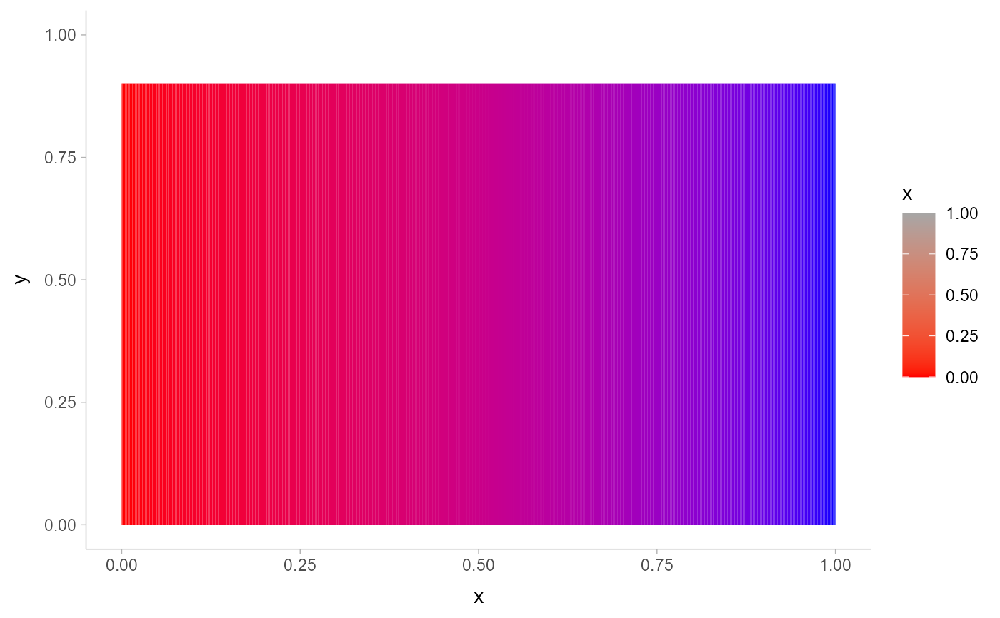
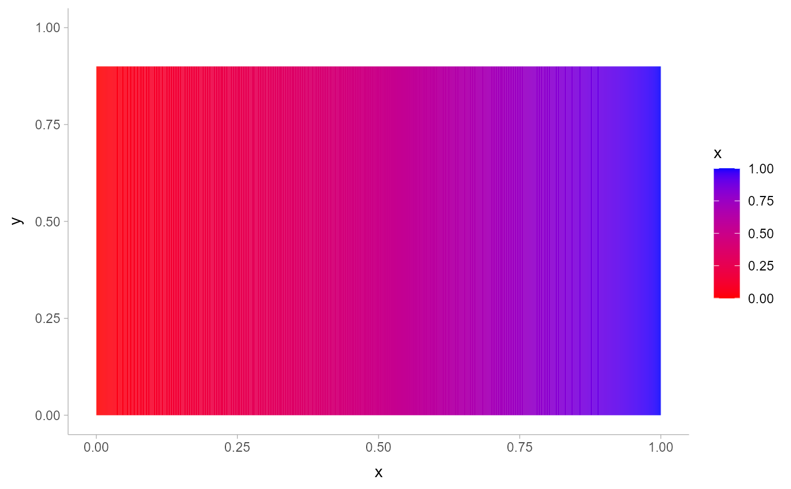
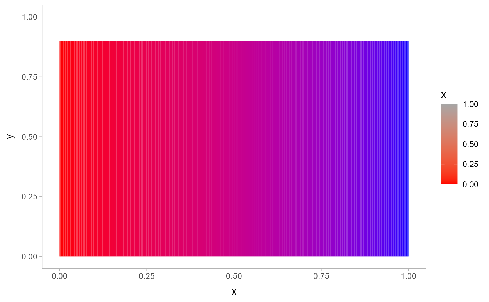
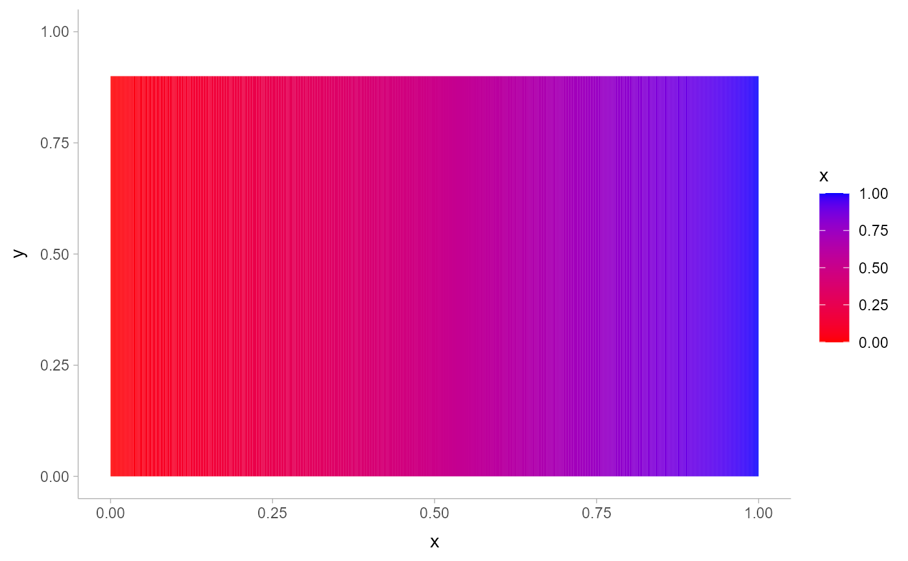

A colour ramp bar guide that shows continuous colour ramp scales mapped onto
values as a smooth gradient. Designed for use with scale_fill_ramp_continuous()
and scale_colour_ramp_continuous(). Based on guide_colourbar().
guide_rampbar(
...,
to = "gray65",
available_aes = c("fill_ramp", "colour_ramp")
)Arguments
- ...
Arguments passed on to
ggplot2::guide_colourbartitleA character string or expression indicating a title of guide. If
NULL, the title is not shown. By default (waiver()), the name of the scale object or the name specified inlabs()is used for the title.title.positionA character string indicating the position of a title. One of "top" (default for a vertical guide), "bottom", "left" (default for a horizontal guide), or "right."
title.themeA theme object for rendering the title text. Usually the object of
element_text()is expected. By default, the theme is specified bylegend.titleintheme()or theme.title.hjustA number specifying horizontal justification of the title text.
title.vjustA number specifying vertical justification of the title text.
labellogical. If
TRUEthen the labels are drawn. IfFALSEthen the labels are invisible.label.positionA character string indicating the position of a label. One of "top", "bottom" (default for horizontal guide), "left", or "right" (default for vertical guide).
label.themeA theme object for rendering the label text. Usually the object of
element_text()is expected. By default, the theme is specified bylegend.textintheme().label.hjustA numeric specifying horizontal justification of the label text. The default for standard text is 0 (left-aligned) and 1 (right-aligned) for expressions.
label.vjustA numeric specifying vertical justification of the label text.
barwidthA numeric or a
grid::unit()object specifying the width of the colourbar. Default value islegend.key.widthorlegend.key.sizeintheme()or theme.barheightA numeric or a
grid::unit()object specifying the height of the colourbar. Default value islegend.key.heightorlegend.key.sizeintheme()or theme.nbinA numeric specifying the number of bins for drawing the colourbar. A smoother colourbar results from a larger value.
rasterA logical. If
TRUEthen the colourbar is rendered as a raster object. IfFALSEthen the colourbar is rendered as a set of rectangles. Note that not all graphics devices are capable of rendering raster image.frame.colourA string specifying the colour of the frame drawn around the bar. If
NULL(the default), no frame is drawn.frame.linewidthA numeric specifying the width of the frame drawn around the bar in millimetres.
frame.linetypeA numeric specifying the linetype of the frame drawn around the bar.
ticksA logical specifying if tick marks on the colourbar should be visible.
ticks.colourA string specifying the colour of the tick marks.
ticks.linewidthA numeric specifying the width of the tick marks in millimetres.
draw.ulimA logical specifying if the upper limit tick marks should be visible.
draw.llimA logical specifying if the lower limit tick marks should be visible.
directionA character string indicating the direction of the guide. One of "horizontal" or "vertical."
default.unitA character string indicating
grid::unit()forbarwidthandbarheight.reverselogical. If
TRUEthe colourbar is reversed. By default, the highest value is on the top and the lowest value is on the bottomorderpositive integer less than 99 that specifies the order of this guide among multiple guides. This controls the order in which multiple guides are displayed, not the contents of the guide itself. If 0 (default), the order is determined by a secret algorithm.
- to
The color to ramp to in the guide. Corresponds to
1on the scale.- available_aes
A vector of character strings listing the aesthetics for which a
guide_rampbar()can be drawn.
Value
A guide object.
Details
This guide creates smooth gradient color bars for use with scale_fill_ramp_continuous()
and scale_colour_ramp_continuous(). The color to ramp from is determined by the from
argument of the scale_* function, and the color to ramp to is determined by the to argument
to guide_rampbar().
Guides can be specified in each scale_* function or in guides().
guide = "rampbar" in scale_* is syntactic sugar for guide = guide_rampbar();
e.g. scale_colour_ramp_continuous(guide = "rampbar"). For how to specify
the guide for each scale in more detail, see guides().
Examples
library(dplyr)
library(ggplot2)
library(distributional)
# The default guide for ramp scales is guide_legend(), which creates a
# discrete style scale:
tibble(d = dist_uniform(0, 1)) %>%
ggplot(aes(y = 0, xdist = d)) +
stat_slab(aes(fill_ramp = after_stat(x)), fill = "blue") +
scale_fill_ramp_continuous(from = "red")
 # We can guide_rampbar() to instead create a continuous guide, but
# it does not know what ccolor to ramp to (defaults to "gray65"):
tibble(d = dist_uniform(0, 1)) %>%
ggplot(aes(y = 0, xdist = d)) +
stat_slab(aes(fill_ramp = after_stat(x)), fill = "blue") +
scale_fill_ramp_continuous(from = "red", guide = guide_rampbar())

# We can tell the guide what color to ramp to using the `to` argument:
tibble(d = dist_uniform(0, 1)) %>%
ggplot(aes(y = 0, xdist = d)) +
stat_slab(aes(fill_ramp = after_stat(x)), fill = "blue") +
scale_fill_ramp_continuous(from = "red", guide = guide_rampbar(to = "blue"))

# We can guide_rampbar() to instead create a continuous guide, but
# it does not know what ccolor to ramp to (defaults to "gray65"):
tibble(d = dist_uniform(0, 1)) %>%
ggplot(aes(y = 0, xdist = d)) +
stat_slab(aes(fill_ramp = after_stat(x)), fill = "blue") +
scale_fill_ramp_continuous(from = "red", guide = guide_rampbar())

# We can tell the guide what color to ramp to using the `to` argument:
tibble(d = dist_uniform(0, 1)) %>%
ggplot(aes(y = 0, xdist = d)) +
stat_slab(aes(fill_ramp = after_stat(x)), fill = "blue") +
scale_fill_ramp_continuous(from = "red", guide = guide_rampbar(to = "blue"))
